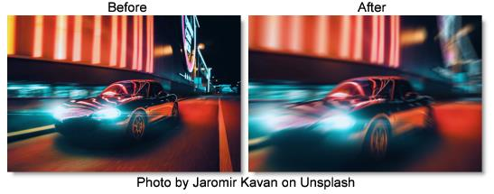

S_BlurMotion
Description
Performs a motion blur between the specified From and To transformations. This can be used to perform radial zoom blurs, rotate blurs, directional blurs, or any combination of these.
The S_BlurMotion filter comes from the Emmy award winning Boris FX Sapphire filter set.
Category
Diffusion/Blurs.
Controls
Presets
To select a preset, pick one from the Presets window.
Mode
Selects between a color or black and white result.
Blur Color
Blurs all color channels.
Blur Mono
Creates a black and white image and then blurs the result.
Center
The center of rotation and zooming. The shift values should be zero for this parameter to make sense.
From Z Dist
The 'distance' of the From transformation. This zooms about the Center location when Shift is 0. Increase to zoom out, decrease to zoom in.
From Rotate
The rotation angle of the From transformation, in degrees, about the center.
From Shift
The horizontal and vertical translations of the From transformation. This can be used for directional motion. If it is nonzero the center location becomes less meaningful.
To Z Dist
The 'distance' of the To transformation. Increase to zoom out, or decrease to zoom in.
To Rotate
The rotation angle of the To transformation, in degrees, about the center. Note that if the From and To Rotate angles are very different, the interpolation between them will become less accurate.
To Shift
The horizontal and vertical translations of the To transformation. This can be used for directional motion. If it is nonzero, the center location becomes less meaningful.
Exposure Bias
Determines the variable amount of exposure along the path between the From and To transformations. A value of 0 causes more exposure at the From end, 0.5 causes equal exposure along the path, and 1 causes more exposure at the To end. If you have bright spots on a dark background, a 0 value would cause the processed spots to be brighter at the From end and dark at the To end, and a 1 value would cause the opposite.
Brightness
Scales the brightness of the result.
Wrap
Determines the method for accessing outside the borders of the source image.
No
Gives black beyond the borders.
Tile
Repeats a copy of the image.
Reflect
Repeats a mirrored copy. Edges are often less visible with this method.
Blur Res
Selects the resolution factor for the motion blur. This is similar to the general 'Res' factor parameter, but does a better job of averaging down to lower resolution and interpolating back up to the result. Higher resolutions give better quality, lower resolutions give faster processing.
Full
Full resolution is used.
Half
The motion blurring is performed at half resolution.
Quarter
The motion blurring is performed at quarter resolution.
Subpixel
If enabled, uses a better quality, but slightly slower method for performing the blur.
Crop Input
These 4 parameters, Crop Top, Crop Bottom, Crop Left, and Crop Right, allow selecting a rectangular subsection of the image to be processed. If the Wrap parameters are set to "No", the exposed borders will be transparent. If the Wrap is "Tile" or "Reflect", the source image is wrapped on the new cropped borders to fill the frame. This can make it easier to avoid artifacts due to distorting an image with bad edges.
Show Center
Enables/disables the on-screen control for adjusting the Center parameter.
Show From Transfm
Enables/disables the on-screen control for adjusting the From Z Dist and From Rotate parameters.
Show To Transform
Enables/disables the on-screen control for adjusting the To Z Dist and To Rotate parameters.
Show From Shift
Enables/disables the on-screen control for adjusting the Center parameter.
Show To Shift
Enables/disables the on-screen control for adjusting the Center parameter.